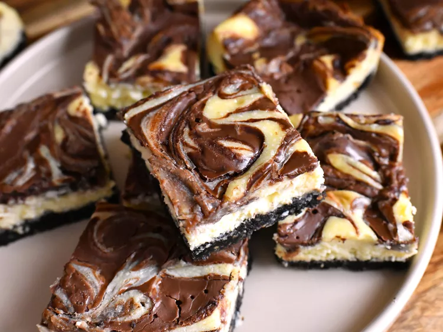

Odin Recipes
Nutella Swirl Cheesecake Bars

For these Nutella swirl cheesecake bars, a rich Nutella-swirled cheesecake filling
sits atop an OREO and hazelnut-studded crust for a truly delectable dessert.
Make sure to give the bars at least 4 hours in the fridge before serving.
Ingredients